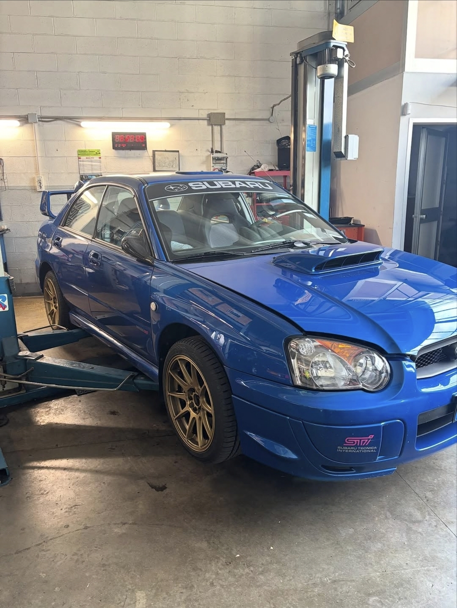

Il Progetto
Nata per le prove speciali, trasformata per i cordoli. Questa STi ha ricevuto un trattamento completo "close-deck" al monoblocco per reggere pressioni turbo elevate senza rischi, unito a una geometria sospensioni completamente su uniball.
Motore EJ257
- Monoblocco Close-Deck
- Prigionieri testa ARP 625+
- Guarnizioni testa Cosworth
- Radiatore olio maggiorato
- Potenza: 450 CV
Handling
- Assetto Öhlins Road & Track
- Braccetti su uniball Whiteline
- Barre antirollio maggiorate
- Impianto frenante 6 pompanti
Estetica & Aero
- Cerchi O.Z. Ultraleggera Gold
- Ala posteriore Carbonio
- Splitter anteriore regolabile
INVESTIMENTO TOTALE PROGETTO
Esclusa vettura base.
~ € 35.000
